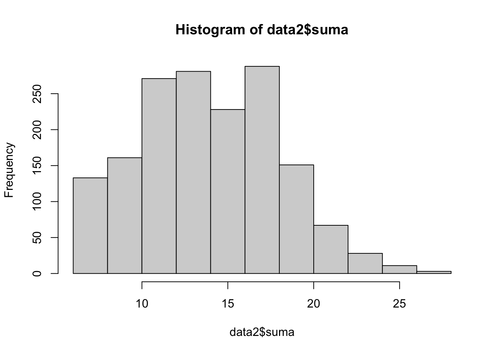
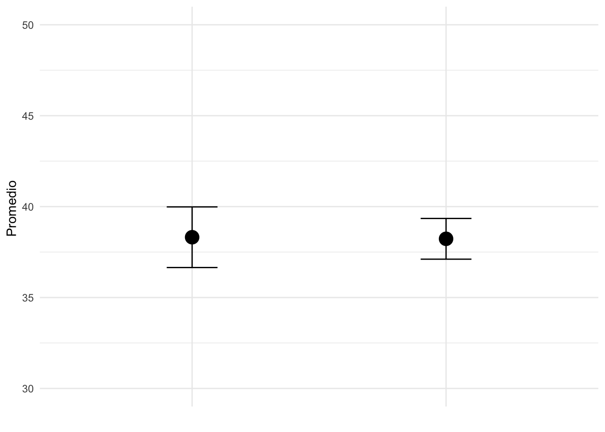

Un indicador aditivo es un tipo de indicador compuesto que se construye sumando los valores de varias variables o ítems que miden distintos aspectos de un mismo concepto o dimensión. Se utiliza con frecuencia en investigaciones sociales y de opinión pública para resumir en un solo valor la información proveniente de múltiples preguntas.
Características principales:
Fácil de calcular: se obtiene sumando los valores de las variables seleccionadas. Asume igual peso: cada ítem tiene el mismo valor relativo en la construcción del índice (a menos que se indique un peso diferente). Utilizado en encuestas: por ejemplo, para medir actitudes hacia la democracia, autoritarismo, valores tradicionales, etc.
Ejemplo:
Utilizamos la base de datos de Proetica.
library(rio)
data2=import("Base de datos para Proética 2019_4.sav")library(rio)
data2=import("Base de datos para Proética 2019_4.sav")Deseamos crear un indicador con: P30_01 ,P30_02,P30_03, P30_08 , P30_09 y P30_10.
library(dplyr)
library(dplyr)
data2=data2%>%
dplyr::rename("congreso"=P30_01)%>%
dplyr::mutate(congreso=na_if(congreso,6))%>%
dplyr::rename("contraloria"=P30_02)%>%
dplyr::mutate(contraloria=na_if(contraloria, 6))%>%
dplyr::rename("fiscalia"=P30_03)%>%
dplyr::mutate(fiscalia=na_if(fiscalia, 6))%>%
dplyr::rename("procur"=P30_08)%>%
dplyr::mutate(procur=na_if(procur,6))%>%
dplyr::rename("judicial"=P30_09)%>%
dplyr::mutate(judicial=na_if(judicial, 6))%>%
dplyr::rename("policia"=P30_10)%>%
dplyr::mutate(policia=na_if(policia, 6))library(dplyr)
library(dplyr)
data2=data2%>%
dplyr::rename("congreso"=P30_01)%>%
dplyr::mutate(congreso=na_if(congreso,6))%>%
dplyr::rename("contraloria"=P30_02)%>%
dplyr::mutate(contraloria=na_if(contraloria, 6))%>%
dplyr::rename("fiscalia"=P30_03)%>%
dplyr::mutate(fiscalia=na_if(fiscalia, 6))%>%
dplyr::rename("procur"=P30_08)%>%
dplyr::mutate(procur=na_if(procur,6))%>%
dplyr::rename("judicial"=P30_09)%>%
dplyr::mutate(judicial=na_if(judicial, 6))%>%
dplyr::rename("policia"=P30_10)%>%
dplyr::mutate(policia=na_if(policia, 6))Una vez calculado el índice aditivo, calcule el intervalo de la media al 99% de nivel de confianza. Determine si el indicador varía si existe una diferencia entre quienes residen en Lima Metropolitana y en el interior del país (zonab). Realice el gráfico correspondiente.
data2$suma=
data2$congreso+data2$contraloria+data2$fiscalia+data2$procur+data2$judicial+data2$policia
summary(data2$suma)
hist(data2$suma)data2$suma=
data2$congreso+data2$contraloria+data2$fiscalia+data2$procur+data2$judicial+data2$policia
summary(data2$suma)## Min. 1st Qu. Median Mean 3rd Qu. Max. NA's
## 6.00 12.00 14.00 14.42 18.00 28.00 235hist(data2$suma)
library(scales)
data2$indicador=rescale(data2$suma,to=c(0,100))library(scales)
data2$indicador=rescale(data2$suma,to=c(0,100))library(lsr)
ciMean(data2$indicador,na.rm=T,conf =0.99)library(lsr)
ciMean(data2$indicador,na.rm=T,conf =0.99)## 0.5% 99.5%
## [1,] 37.03404 39.47644table(data2$zonab)table(data2$zonab)##
## 1 2
## 578 1279str(data2$zonab)data2$zonab=as.factor(data2$zonab)data2$zonab=as.factor(data2$zonab)data2$zonab=factor(data2$zonab,levels = levels(data2$zonab),
labels = c("LimaMetropolitana","Interior"))data2$zonab=factor(data2$zonab,levels = levels(data2$zonab),
labels = c("LimaMetropolitana","Interior"))table(data2$zonab)table(data2$zonab)##
## LimaMetropolitana Interior
## 578 1279library(dplyr)
tabla=data2%>%
group_by(zonab)%>%
summarise(Media=mean(indicador,na.rm = T),
LimiteInferior=ciMean(indicador,na.rm = T)[1],
LimiteSuperior=ciMean(indicador,na.rm = T)[2])
tablalibrary(dplyr)
tabla=data2%>%
group_by(zonab)%>%
summarise(Media=mean(indicador,na.rm = T),
LimiteInferior=ciMean(indicador,na.rm = T)[1],
LimiteSuperior=ciMean(indicador,na.rm = T)[2])
tabla## # A tibble: 2 × 4
## zonab Media LimiteInferior LimiteSuperior
## <fct> <dbl> <dbl> <dbl>
## 1 LimaMetropolitana 38.3 36.6 40.0
## 2 Interior 38.2 37.1 39.3library(ggplot2)
ggplot(tabla, aes(x = zonab, y = Media)) +
geom_point(size = 5) + # Punto de la media
geom_errorbar(aes(ymin = LimiteInferior, ymax = LimiteSuperior), width = 0.2) +
labs(y = "Valor", x = "") +
theme_minimal() +
theme(axis.text.x = element_blank(), axis.ticks.x = element_blank())+ ylab("Promedio ")+
ylim(30, 50) library(ggplot2)
ggplot(tabla, aes(x = zonab, y = Media)) +
geom_point(size = 5) + # Punto de la media
geom_errorbar(aes(ymin = LimiteInferior, ymax = LimiteSuperior), width = 0.2) +
labs(y = "Valor", x = "") +
theme_minimal() +
theme(axis.text.x = element_blank(), axis.ticks.x = element_blank())+ ylab("Promedio ")+
ylim(30, 50) 